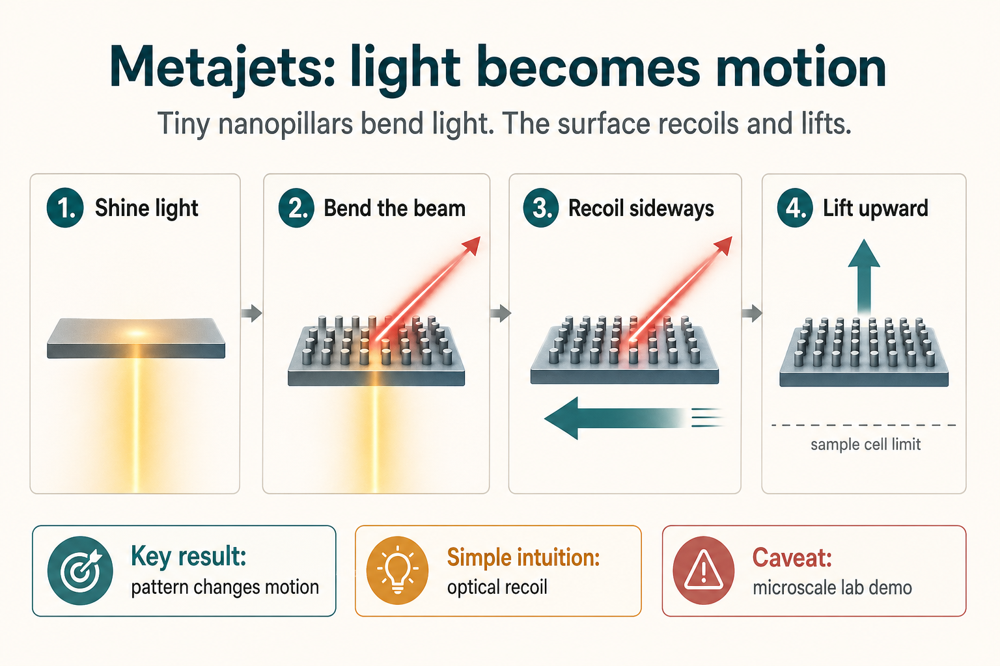

Paper Summary
Optical propulsion and levitation of metajets
Summary
The paper is about using specially engineered tiny surfaces, called metasurfaces, to make microscopic objects move when light shines on them. The authors call these moving objects metajets.
In one sentence: the authors show that if a tiny surface is designed to bend light in a controlled direction, the surface feels an opposite reaction force, letting it move sideways and lift upward using light alone.
Normally, light can push things because photons carry momentum. The clever part here is that the object is not merely being pushed by a beam. It is engineered to redirect the light. If a tiny object bends an incoming beam diagonally to one side, the object itself experiences recoil in another direction.
The team built nanoscale patterns made from arrays of silicon nanopillars on a tiny platform. These patterns impose a phase gradient, meaning they change the timing of the light wave across the surface. That phase gradient makes light leave at an angle rather than simply passing straight through. The angled redirection creates a controllable mechanical force.
What Metasurfaces Are
A metasurface is an ultra-thin artificial material whose nanoscale structure is designed to control light. Instead of using a traditional lens or mirror, the surface is covered with tiny repeated structures. In this paper, those structures are silicon cylindrical pillars.
By changing the size and arrangement of the pillars, the authors control how light is refracted. The metasurface is therefore both an optical device, because it shapes light, and a mechanical object, because light then pushes it around.
What They Demonstrated
The authors fabricated microscopic free-standing metajets and shone a laser on them from below. They observed that the metajets:
- moved sideways across the sample;
- moved upward, meaning they levitated within the sample cell;
- followed the direction predicted by the theoretical model;
- moved faster when the metasurface design produced stronger angled refraction.
One key result is that a 5-pillar design reached about 58% refraction efficiency and produced lateral motion of around 4.75 um/s. A 3-pillar configuration achieved higher refraction efficiency, around 78%, and faster motion, around 7 um/s. In simple terms, changing the nanopillar pattern changed the optical recoil, and therefore changed how the tiny object moved.
The Main Physics
The paper combines two ideas. First, from momentum conservation, if light changes momentum, the object causing that change gets an equal and opposite reaction. Second, generalized Snell’s law says metasurfaces can bend light in unusual ways by imposing a phase gradient.
The key conceptual move is that the force on the metajet is determined not just by the incoming light, but by the difference between the incoming and outgoing light momentum. That is why controlling the outgoing direction of light lets the authors control the motion of the object.
Why This Matters
Most optical manipulation methods, such as optical tweezers, rely heavily on focused light beams and intensity gradients. Those are powerful, but they are strongly shaped by the beam and are mainly used at microscopic scales.
Here, the force comes from the designed interface itself. The metasurface “programs” the momentum exchange. In theory, that makes the principle relevant to microrobots, microdevices, and possibly much larger light-driven systems. The paper is careful to present large-scale light sails as a future opportunity, not as something already built.
The deeper point is that metasurfaces can be designed not only to control light, but also to control their own motion under illumination. This turns a normally passive optical component into an active mechanical agent.
Strengths
A major strength is that the paper combines theory, simulation, fabrication, and experimental observation. It is not only a conceptual proposal.
The authors also test different metasurface configurations. The 3- to 8-pillar supercell designs show that changing the phase gradient changes the refraction angle, efficiency, and movement speed. That dose-response-like pattern strengthens the causal interpretation.
The theoretical framing is elegant because it reduces a complex nanophotonic system to a momentum-transfer problem: metasurface design changes light momentum, and that change generates mechanical force.
Caveats and Limitations
- The experiment is a controlled microscale demonstration in a liquid cell under carefully aligned laser illumination.
- The movement is slow, measured in micrometres per second.
- The vertical motion stabilises when the metajet reaches the limit of the sample chamber, so this is not free levitation in open space.
- Some force analysis depends on modelling and Maxwell stress tensor simulations, which is appropriate for the field but means not every component is directly measured in a simple mechanical way.
- Practical microrobots would need robust control in messier environments.
- Scaling toward light sails would require solving major material, thermal, beam-stability, and manufacturing problems.
Plain-English Interpretation
This is not mainly a “new vehicle” paper. It is more a new control-principle paper.
The authors show that tiny optical structures can be designed so that light does not just push them randomly or forward. Instead, light produces programmable 3D forces. The movement comes from engineered light recoil.
A useful analogy is a microscopic sailboat whose sail is not merely catching wind, but patterned so precisely that it redirects the “wind” of photons in chosen directions, causing controlled motion.
Bottom Line
This is an elegant proof-of-concept showing that nanostructured optical surfaces can convert light into controlled 3D motion. Its immediate significance is in fundamental photonics and microscale manipulation. Its longer-term promise is in microrobotics and, much more speculatively, light-driven propulsion systems.
The main caveat is that the exciting applications are still far downstream: the current evidence supports the physical principle, not practical deployment at large scale.
